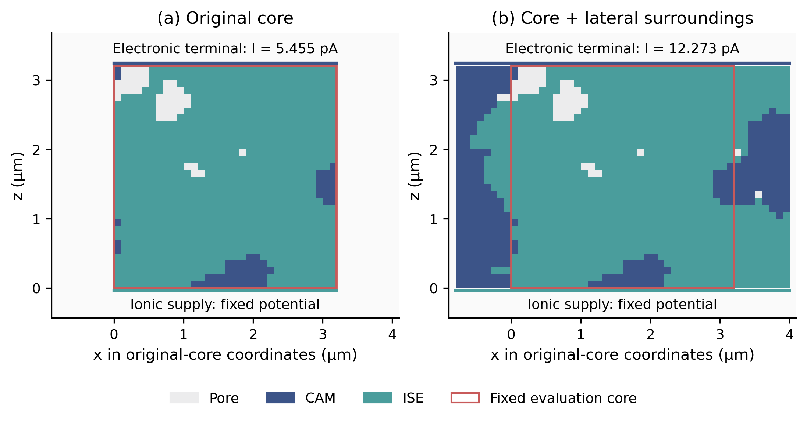
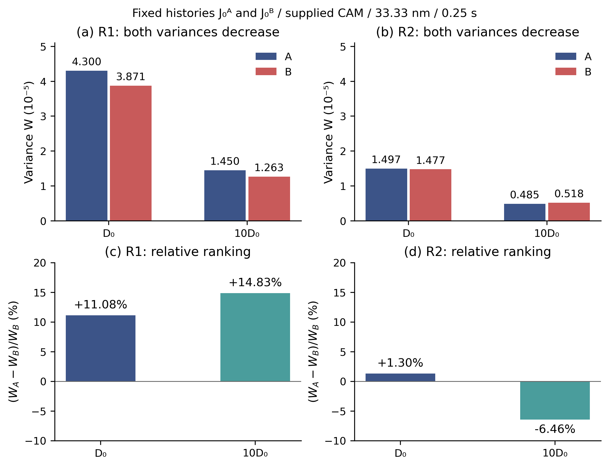
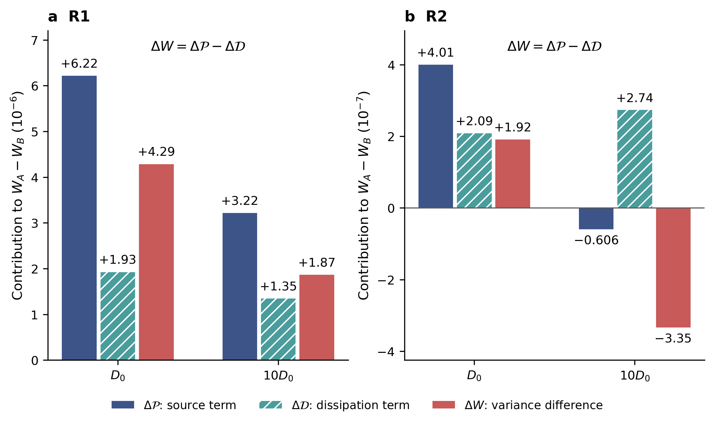
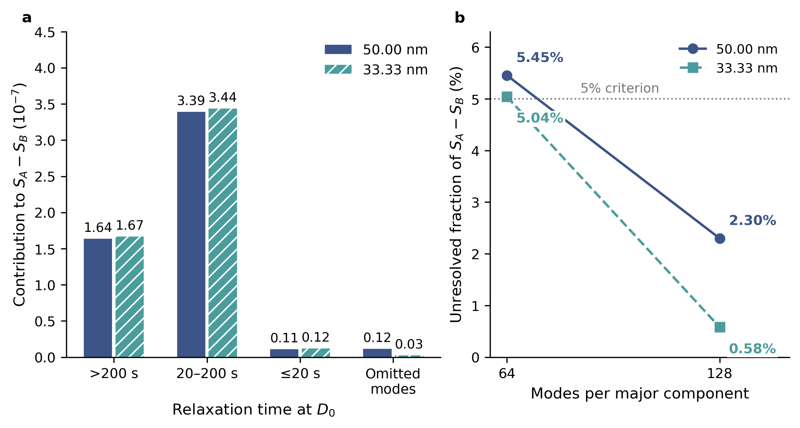

Solid-state cathode transport
Contact-loss comparison
Matched contact-loss masks in a reconstructed solid-state cathode are compared under a tenfold change in solid diffusivity.
Scope & limitations

Original BM03 FIB–SEM tomography: Philip Minnmann and Johannes Schubert · 10.22029/jlupub-18458 · Geometry-derived assets retain CC BY-NC 4.0.
Diffusivity comparison
With each mask’s reaction history fixed, the R2 variances fall by 67.6% and 64.9%, while their relative contrast changes from +1.30% to −6.46%. R1 retains its ordering.
Concentration variance at 20 s
Supplied CAM · 33.33 nm · Δt = 0.25 s
R2 · D₀ · A has greater variance than B.
| Region | Diffusivity | WA | WB | Relative contrast |
|---|---|---|---|---|
| R1 | D₀ | 4.3003308e-05 | 3.8712403e-05 | +11.08% |
| R1 | 10D₀ | 1.4503535e-05 | 1.2630941e-05 | +14.83% |
| R2 | D₀ | 1.4966913e-05 | 1.4774814e-05 | +1.30% |
| R2 | 10D₀ | 4.8482401e-06 | 5.1831555e-06 | -6.46% |


Methods
Isothermal electronic and ionic conduction, interface kinetics and isotropic solid diffusion on a reconstructed CAM / electrolyte / pore geometry. A/B masks match removed area, depth, orientation and original active-material-region counts.
Each mask retains its own reaction history during the diffusivity change. Conservative inventory checks, refinement records and a diffusion-mode account support the numerical comparison.

Scope & limitations
Data & code
Reproduce the native-grid example
Extract the package, install the requirements listed in its README and run python run_example.py. The calculation uses the bundled extract and does not require COMSOL. It checks input hashes and compares its outputs with expected fields.
The native-grid example reproduces one R2 A/B calculation, not the complete refined fixed-history study. Full multi-gigabyte solver states and solved COMSOL MPH files are not included in the supporting deposit.
Manuscript: Xinyu Zhang, Jingyu Lu and Zheyu Ye. Xinyu Zhang and Jingyu Lu share first authorship. Submitted to Journal of Solid State Electrochemistry, 2026. The Zenodo identifier refers to the supporting archive.